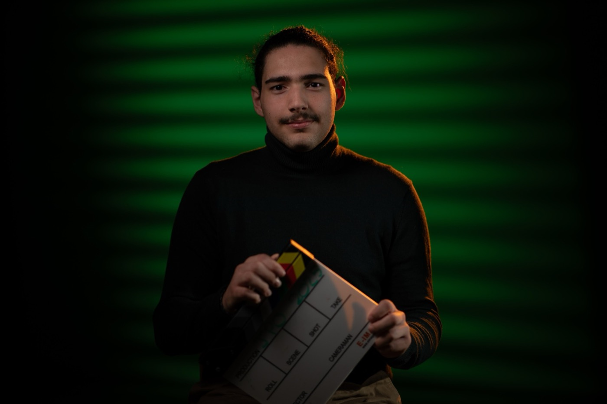

Lilian CornetOù les mots vont, le corps ira.
Étudiant en 1re année de BUT Métiers du Multimédia et de l'Internet à l'IUT de Béziers, je m'intéresse à tout ce qui touche au numérique : développement web, design d'interfaces, identité visuelle. J'aime autant écrire du code que construire une direction artistique.
Je recherche une alternance en développement web full-stack (front/back) ou en communication digitale, pour continuer à apprendre sur le terrain tout en contribuant à des projets concrets.
L'écriture : poésie, sessions d'écriture publique, prix Jacques Prévert de la Société des poètes français. Mais aussi l'escalade, le cyclisme, et un engagement associatif régulier (Téléthon, Conseil de Vie Lycéenne, club journalisme et radiophonie).
- FrançaisNatif
- ItalienB2
- AnglaisA2